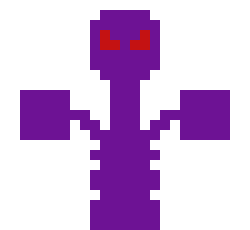

A few days later your Squiddo bacame a huge octopus. This transformation is called energizing, and can be permanent or temporary. Your Squiddo energized into a huge Octopummeler.

This is what the Octopummeler looks like. You're lucky it's not hostile!